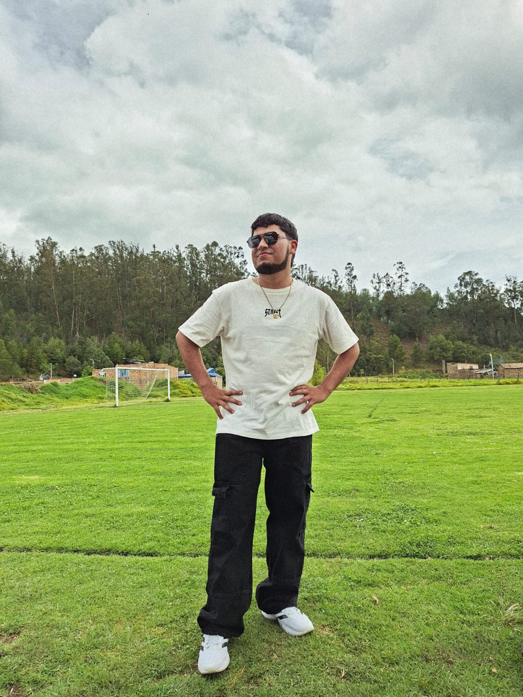

Juan Esteban Galvis Torres
"Bienvenido a mi pagina web"
Soy Juan Galvis aprendiz del programa Análisis y Desarrollo de Software. Me gusta crear ideas en páginas que sirvan a otras personas.
Conoce mi perfilSobre mí
Soy una persona demasiado curiosa, me gusta crear cosas nuevas. Elegí Analisis y Desarrollo de Software porque quiero saber cómo funcionan las paginas web y poder hacerlas por mi propia mano. Me interesa aprender a hacer aplicaciones y desarrollarlas para facilitar la vida de las personas.
Mi meta es ser un programador y seguir aprendiendo cada día.
Mis Habilidades
Lógica de Programación
Me gusta resolver los problemas y aprender a solucionarlos.
Creatividad
Me gusta mejorar las ideas que ya estan y buscar formas para que sea de mejor gusto.
Desarrollo web
Estoy aprendiendo a crear páginas web con HTML y CSS.
Trabajo en equipo
Me gusta escuchar las ideas de los demás, compartir las mías y asi poder agarrrar las mejores cosas de las ideas.
Responsabilidad y aprendizaje
Intento cumplir con mis actividades, aprender de mis errores y mejorar en lo que hago.
Bases de datos
Estoy aprendiendo a manejar información y hacer consultas para poder manejar mejor la base de datos.
Mis Proyectos
Supermercado El Ara

Objetivo: Diseñar e implementar un sistema de información para la gestión integral de productos, ventas y clientes de un supermercado, con el propósito de optimizar el control de inventarios y registrar de forma ordenada los movimientos comerciales del establecimiento.
Descripción: Proyecto desarrollado en equipo en el que realizamos un análisis detallado de los procesos operativos del supermercado, identificamos sus necesidades de gestión y diseñamos la estructura de datos y los flujos de trabajo del sistema..
Tecnologías: Lógica de programación, análisis y diseño de sistemas, diagramación de procesos y modelos, diseño de bases de datos.
Mi participación: Me encargué de recopilar la información necesaria, propuse y definí secciones de la estructura de datos, ordené el contenido del trabajo y participé activamente en la redacción, coordinación y presentación final del proyecto.
Contacto
Puedes escribirme a:
juan_egalvist@soy.sena.edu.co